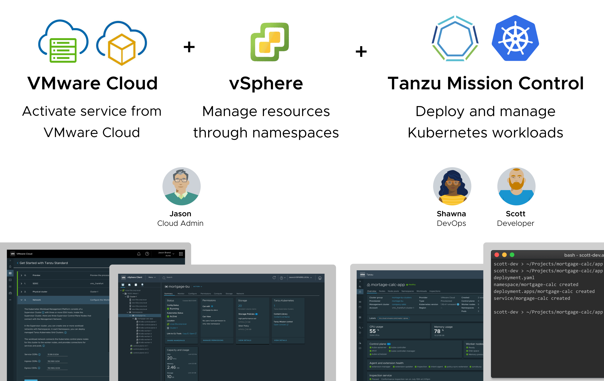
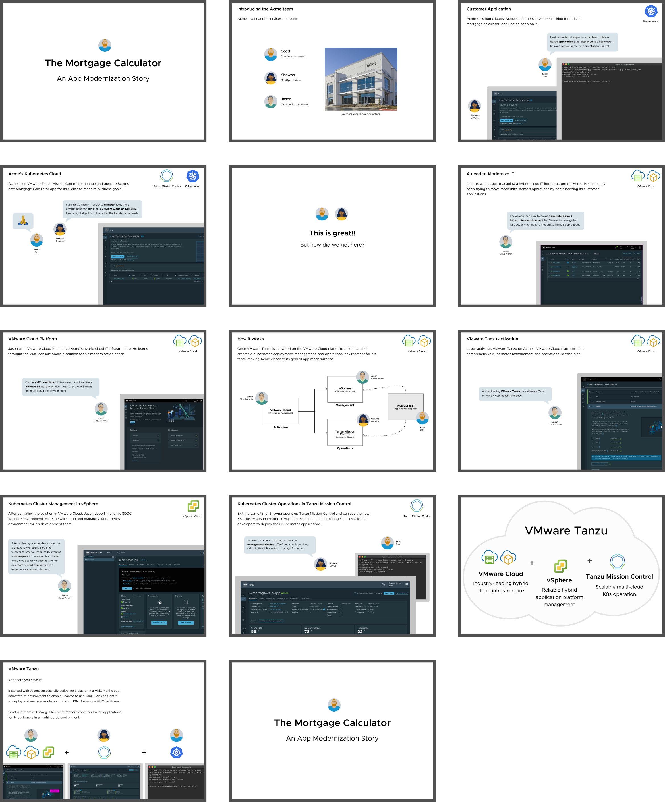
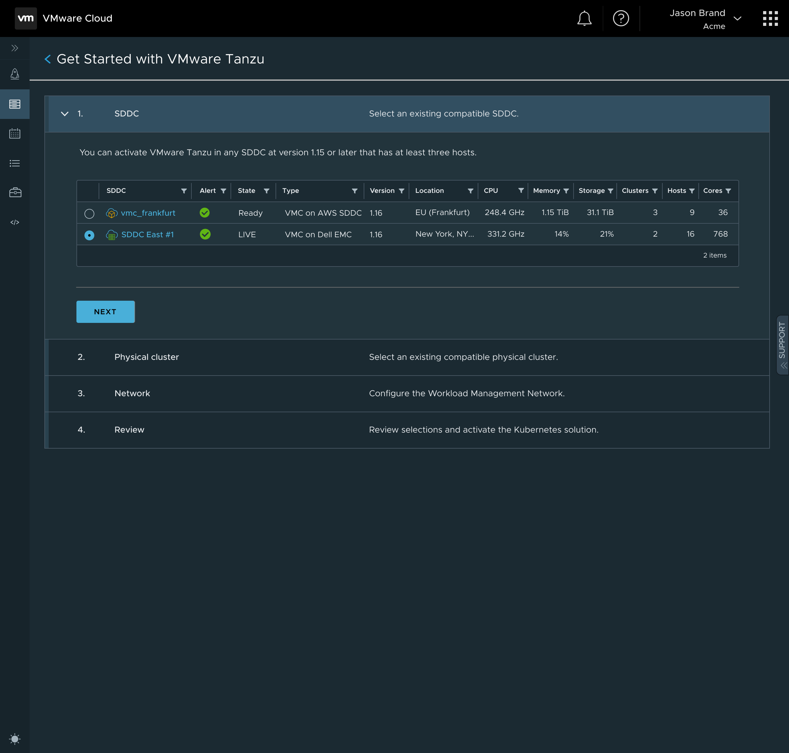
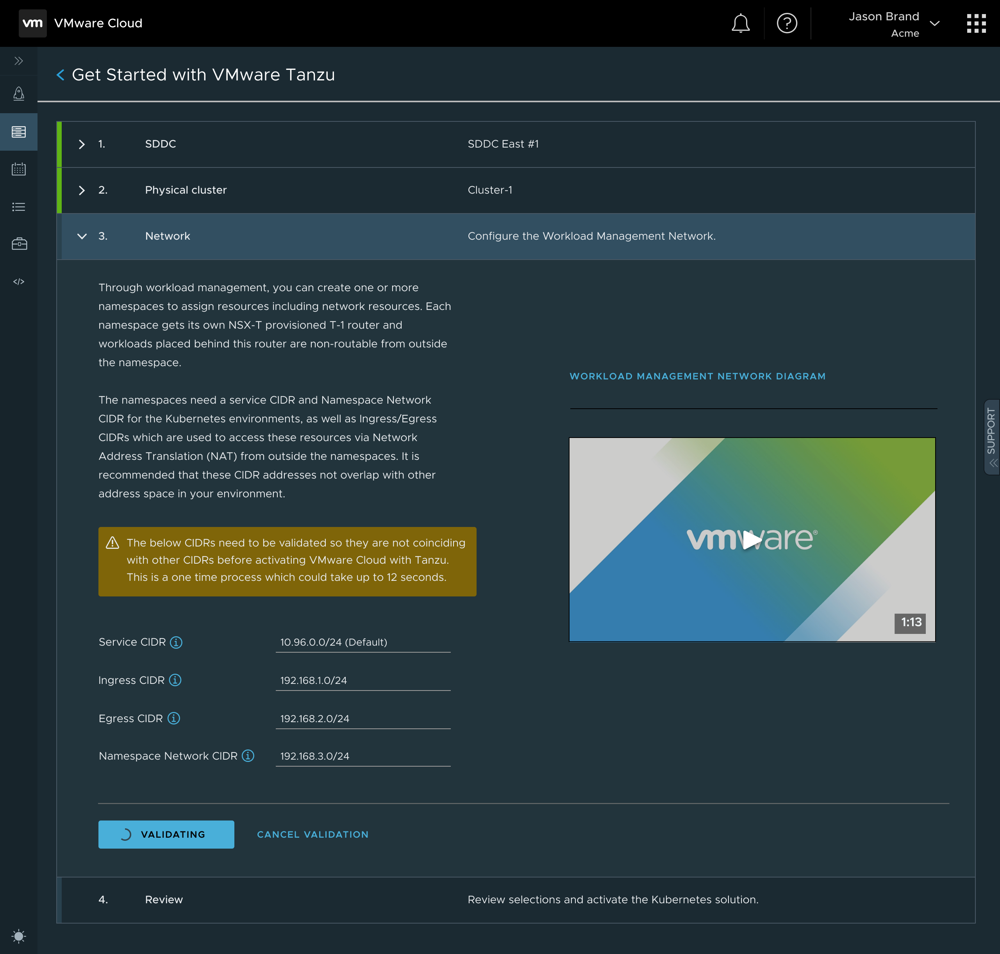
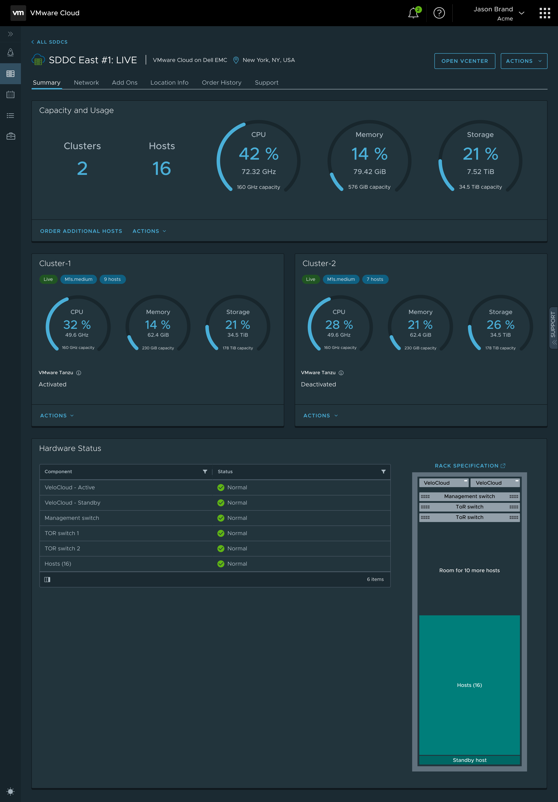

01 — Context
Making Tanzu service setup understandable from first touch
This work focused on reducing setup friction for teams configuring Tanzu services. The objective was to guide users from initial intent through required configuration decisions without forcing deep platform knowledge up front.
The UX direction combined progressive disclosure, clear defaults, and explicit system feedback so users could move confidently through setup, validation, and completion.
“Enterprise setup needed to feel guided, not overwhelming, while preserving expert control when it mattered.”
The design language mapped each step to a clear purpose, helping platform admins understand what to decide now versus what could be tuned later.

This framing visual establishes how VMware Cloud, vSphere, and VMware Tanzu converge before the setup journey details begin.
Before walking through each setup step, this next artifact explains the core product story: what customer pain appears at service-parameter time, where the decision burden spikes, and how the proposed interaction model reduces that burden with clearer defaults and guidance.

Placed at the beginning to explain the end-to-end customer problem and the solution strategy before detailed flow steps.
02 — End-to-End Flow
From service selection to environment-ready confirmation
The core journey was designed as a connected story across entry, configuration, dependency checks, and success state. This flow structure helped teams maintain momentum while still understanding technical implications at each checkpoint.

Initial frame establishes setup objective, scope, and user confidence before deep configuration begins.

Core setup controls are grouped by decision type to reduce cognitive load and keep technical sequencing clear.

System checks and resolution cues make errors actionable and make success states explicit for handoff to operations.
05 — Outcome
A more navigable setup experience for enterprise platform teams
The final concept positioned Tanzu setup as a guided workflow: clear entry point, predictable progression, and meaningful feedback at every stage. This strengthened onboarding confidence while preserving the flexibility expected by advanced operators.
The complete case narrative and supporting visuals are also available in the project PDF.
PROJECT PDF